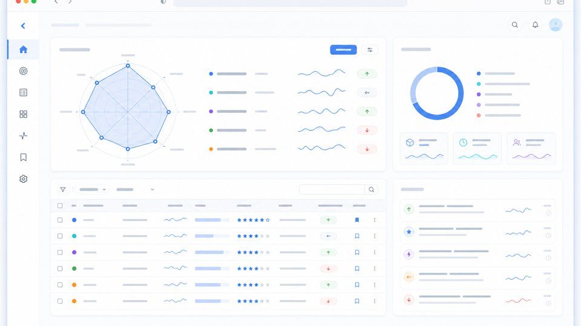
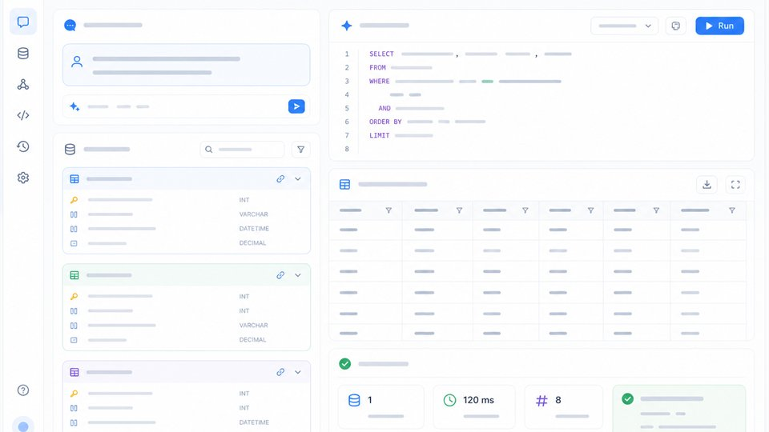

AgentRadar 行业级趋势判断重构中
从大厂、研究所、实验室、知名开发者、工作室、社区、政策金融、新闻学术和开源项目抽取证据，识别周趋势、新兴潜力项目、评分依据与趋势拐点。
Currently
从大厂、研究所、实验室、知名开发者、工作室、社区、政策金融、新闻学术和开源项目抽取证据，识别周趋势、新兴潜力项目、评分依据与趋势拐点。
围绕 schema linking、SQL 生成、执行校验、结果验证和错误归因提升工程可信度。
关注可复现 fixtures、schema 检查、质量门禁和 agent 工作流的验证闭环。

面向 AI Agent 生态的行业级趋势判断系统。它不止做资讯聚合或项目榜单，而是把多观察源、项目评分依据、新兴潜力发现和周趋势裁决组织成可审计证据链。

自然语言到 SQL 的数据智能项目，重点不是只生成语句，而是把查询理解、执行反馈和结果验证串成可评估链路。
多观察源 -> 新兴潜力发现 -> 项目评分依据 -> Industry Claim Ledger -> 周趋势裁决 -> 工具降级兜底 -> 日报 / 月报 / 知识卡 / weekly 行业叙事
覆盖大厂 / 产品线、研究所、实验室、知名开发者、工作室、社区、政策金融、新闻学术与开源项目，不只盯 GitHub 热榜。
用 ecosystem observer 和长尾候选池捕捉尚未成为大众共识的 Agent 项目，并区分真实潜力信号与名气延伸。
沉淀帮助度、信息增量、证据强度、潜力信号、曝光饱和度，以及 coverage / cohesion / novelty / reliability 等排序依据。
把项目、产品、研究、政策、资本、社区、新闻等十轴信号归一到 Industry Claim Ledger，保留主体、引用、贡献和反证。
规则层先聚类并暴露未解释项目，再由 weekly trend agent 审核、否决、合并、拆分和重命名，区分已成立趋势与待观察趋势。
每个证据轴记录 primary / secondary / fallback / last resort；工具失败时标注降级、弱观察或 unavailable，再输出可追溯日报、月报和知识卡。
开源部分沉淀 AI Agent 行业证据底座，为私有仓库中的行业级周趋势裁决提供候选池、长尾观察、新兴潜力项目、排序理由和可复核证据。
2023 年参与 Apache InLong 相关贡献，围绕数据集成框架的 Manager / Sort 等模块做代码修复与安全加固。
围绕行业级 Agent 周趋势判断重构 AgentRadar，把多观察源、新兴潜力项目、项目评分依据、反证审计和工具降级兜底组织成可审计系统。
围绕自然语言查询、schema linking、SQL 生成、执行校验和结果验证做数据智能工具。
关注可回放运行、fixtures、schema 检查和 Agent 工作流质量门禁。
参与 Apache InLong 相关贡献，围绕数据集成框架的代码修复、安全加固和工程质量改进。
围绕候选召回、排序信号、新鲜度和个性化做产品化系统能力沉淀。
Contact
如果你也在关注 AI Agent、Agent Harness、Text2SQL、搜索推荐或数据产品，欢迎交流。